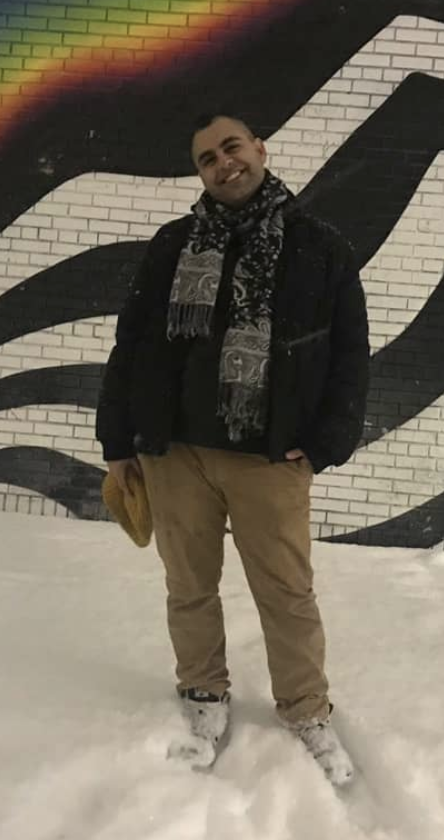

About
Hello there!
It's a pleasure to be able to share a bit more about myself with you. On this page, you'll learn a bit more about who I am outside of my web development pursuits. If you're looking to learn more about my coding background, check out my portfolio!
Education
I completed my undergraduate education at the University of California, San Diego, where I received a Bachelor of Arts degree in Ethnic Studies with a minor in Education Studies. During my time there, I was heavily involved in student leadership around issues of educational inequity and social justice and spent a significant amount of my extracurricular time organizing in the broader San Diego community.
In 2017, I began a Ph.D. program in American Culture with a concentration in Critical University Studies and Arab-American Studies at the University of Michigan. I received my Master of Arts in American Culture in 2019, and decided to pursue a career change. In August of that year, I moved back to my hometown of Rancho Cucamonga in Southern California where I am currently residing.
Music
During my time in graduate school, I realized that marathoning Hulu and Netflix wasn't enough to restore my energy after a draining day (weeks? months?) of non-stop graduate-level work. If I was going to take my self-care seriously, I needed a hobby that would allow me to express myself creatively. I grew up heavily influenced by hip-hop culture, and had already dabbled in breakdancing for a good while. This time, I decided to start learning another skill that fascinated me: DJ'ing! I got the software I needed, and after a bit of practice, it was time to level up. I bought mysellf a DJ controller and the rest was history. Now I'm building my DJ'ing brand, Aries Fire, which is heavily influenced by a wide variety of electronic music genres including traditional UK dubstep, "brostep", riddim, experimental bass, bass house, future house, gangsta house, disco house, dark house, and grime.
Since moving back to California, I began promoting local musical events with a variety of groups who throw underground EDM shows in Southern California, including Retrospekt Entertainment. I had also worked with Di-Streets and DJ Scruffy to launch an event promotion company by the name of Unfilterd Live Events. I'm also in the early stages of producing my own original music!
You can find my DJ instagram and Soundcloud linked in the footer of this website. If you're not sure if I'm on a particular platform, my handles for all social media are @DJAriesFire.
Check out the video in this section of Di-Street's and I freestyling raps and beats!
Visual Work
As I started growing as a DJ, I realized that the most successful DJ's, producers, and musical artists do much more than just make, release, and perform good music. They go beyond that by working to curate experiences through their craft. When they play shows, they don't just play music. They work with their teams to offer immersive productions to highlight their brand, theme, and sound.
Even though I was particularly keen to noticing production aspects beyond just the musical talent at events, I never understood everything that was going on behind the scenes to make it all come together. One of the most salient aspects of the puzzle, however, are the on-screen visuals. It's an aspect of many shows, concerts, and events that can significantly improve the quality of the overall production. I was always so dazzled by the on-screen visuals that were part of the experience of attending a major show or festival, but knew that as a blooming independent artist, I wouldn't be able to afford the team required to make that happen for myself. Being the go-getter that I am however, I decided I was going to "DIY" it anyways. Thus I began to learn another new skill: Video DJ'ing!
Video DJ's are often the ones responsible for the on-screen content in a musical production. Their job is to manipulate clips and video loops live alongside performing musical talent, or in some cases, while they themselves are performing music! Like audio DJ's, this involves a mix of preparing thir content ahead of time, mashing media together strategically, effectively transitioning content, and adding effects to highlight and elevate that content. Video DJ's possess powerful visual tools that allow them to create audio-reactive effects and automate changes to effect and transition parameters. Like many audio DJ's, many video DJ's are also involved in producing their own original media through 2D and 3d animation. Some even work with AR and VR.
As my DJ brand, Aries Fire, conceptually draws on astrology as a theme, I've begun releasing monthly audio-reactive animated shorts based on the astrological season demonstrating what I can do as a video DJ. I've also recently begun hadnling the on-screen visuals for Retrospekt Entertainment's shows, which happen semi-monthly, usually at Rockefellas Bar in Corona, CA.
You can find my animation for the current season (at the time of writing), Aquarius season, in this section!